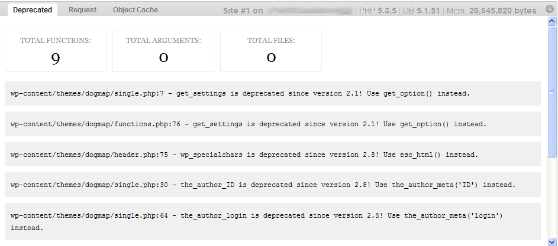
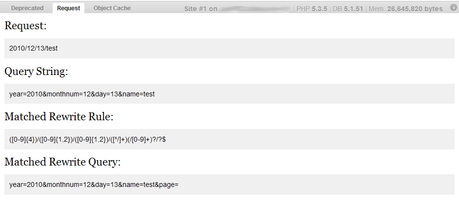
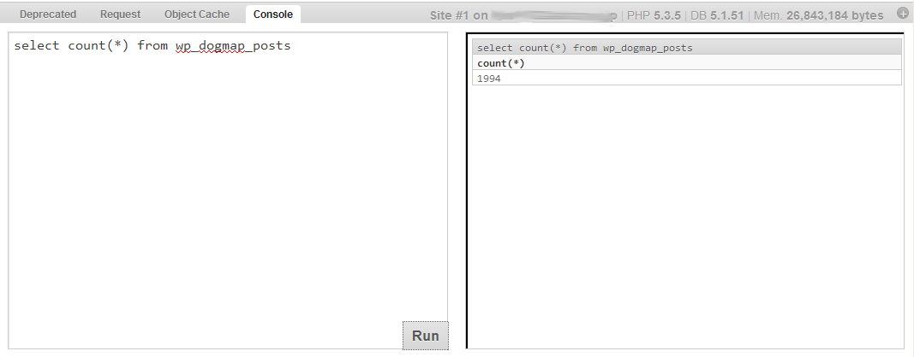
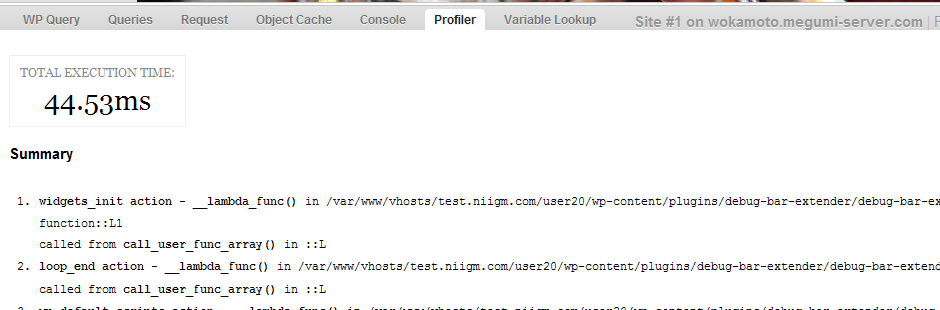
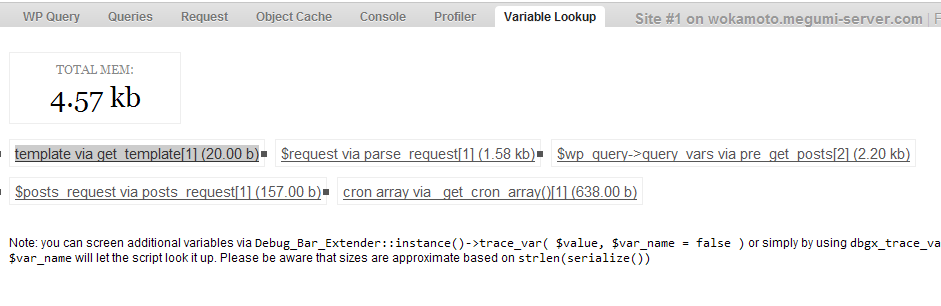
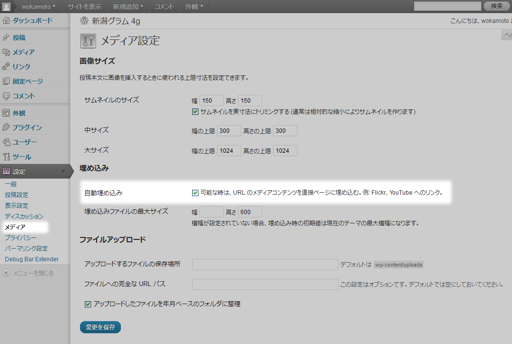
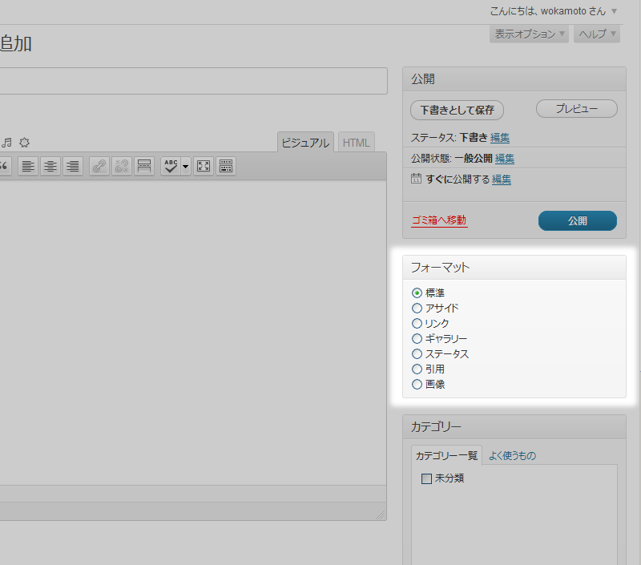

自己紹介 (wokamoto)
 WordPress Plugins/JSeries プロジェクトの一員で、趣味で WordPress のプラグインをつくっていましたが、
WordPress Plugins/JSeries プロジェクトの一員で、趣味で WordPress のプラグインをつくっていましたが、
この春から「め組」ことデジタルキューブさんと、一緒に WordPress 関係の仕事をやらせてもらってます。
- Head Cleaner - <head> 部分のお掃除をするプラグイン
- Google Maps Anywhere - Google Map 挿入用プラグイン
- OAuth Provider - WordPress を OAuth プロバイダにするためのプラグイン
- ...etc
あと WordCamp っていう WordPress のお祭りのスタッフをやってます。
11/27(日) には、WordCamp Tokyo があるので、時間がある人はよろしく。
概要
WordPress の便利機能を紹介します。
- 開発に便利なプラグイン Debug bar
- 子テーマ
- ブラウザ判別
- JavaScript のロード
- 投稿記事のサムネイル表示
- 自動メディアリンク
- 投稿フォーマット
開発に便利なプラグイン Debug bar
WordPress 3.1 以降で追加された「管理バー」を便利にするプラグインです。
- http://wordpress.org/extend/plugins/debug-bar/
- http://wordpress.org/extend/plugins/debug-bar-extender/
- http://wordpress.org/extend/plugins/debug-bar-console/
インストールしたら wp-config.php に以下の3行を追加します。
define('SAVEQUERIES', true);
define('WP_DEBUG', true);
define('WP_DEBUG_DISPLAY', false);開発に便利なプラグイン Debug bar
- Deprecated
Deprecated というメニューを選択すると、WordPress 実行時に発生している error やら warning メッセージが、ファイル名と行数つきで表示されます。
下位互換のために残された、現在は非推奨のテンプレートタグを使ってたりすると、それらも表示されます。

開発に便利なプラグイン Debug bar
- Request
Request というタブでは、表示しているページの URL を構成する文字列と、それがどのように展開されて WordPress に渡されたか確認することができます。

開発に便利なプラグイン Debug bar
- Console
Debug Bar Console をインストールすることで表示される Console というタブでは、PHP や SQL スクリプトを実際に動かすことができます。

開発に便利なプラグイン Debug bar
- Console
例えば、左側のペインに SQL 文を打ち込めば、右側のペインに SQL 文の検索結果が表示されます。
select count(*)
from wp_posts;PHP スクリプトを打ち込めば、右側のペインに PHP の実行結果が表示されます。
$charset = get_option('blog_charset');
var_dump($charset);開発に便利なプラグイン Debug bar
- Profiler
Profiler タブでは、設定されたチェックポイントごとに、処理にかかった時間を計測してくれます。

開発に便利なプラグイン Debug bar
- Profiler
独自のチェックポイントを追加したい場合は、チェックポイントを追加したい場所に以下のように書きましょう。
<?php if (function_exists('dbgx_checkpoint')) dbgx_checkpoint('hoge'); ?>開発に便利なプラグイン Debug bar
- Valiable Lookup
Valiable Lookup タブでは、変数の内容を確認することができます。

開発に便利なプラグイン Debug bar
- Valiable Lookup
確認したい変数が有る場合は、以下のように書きましょう。
<?php if (function_exists('dbgx_trace_var')) dbgx_trace_var($hoge); ?>開発に便利なプラグイン Debug bar
Debug Bar と Debug Bar Extendar は、あくまでも WordPress の Debug をするためのプラグインです。
実稼動しているサイトでは、常時有効にしておく必要はありません。
分析が終わったら、無効にしておくことをオススメします。
子テーマ
WordPress のテンプレートを作成するとき、既存のテーマを元にして新しいテーマを作成する機会は多いと思います。
元テーマの必要なところを修正しても良いのですが、テーマがアップデートされた時、その内容をマージしないといけません。
そんな時は、子テーマという機能を使いましょう。
子テーマ
- 構成ファイル
デフォルトテーマ Twenty Eleven の子テーマを作成する場合の最小構成は、以下のような style.css を用意するだけです。
/*
Theme Name: Niigata Gram
Theme URI:
Description: Child theme for the Twenty Eleven theme for WordPress
Author:
Author URI:
Template: twentyeleven
Version: 0.1.0
*/
@import url('../twentyeleven/style.css');子テーマ
これで Twenty Eleven の全機能を持った子テーマの完成です。
css だけを変更したい場合は、この style.css を修正します。
index.php などを修正したい場合は、同名のファイルを親テーマからコピーして修正します。
親テーマと同名のテンプレートファイルが子テーマのフォルダにある場合、子テーマのテンプレートファイルを読み込みます。
無い場合は、親テーマのテンプレートファイルを読み込みます。
ただし functions.php だけは特殊で、子テーマの functions.php を読み込んだ後、親テーマの functions.php が読み込まれます。
ブラウザ判別
閲覧者のブラウザによって body のクラスを変更できると便利ですよね？
function browser_body_class($classes) {
global $is_lynx, $is_gecko, $is_IE, $is_opera, $is_NS4, $is_safari, $is_chrome, $is_iphone;
if($is_lynx) $classes[] = 'lynx';
elseif($is_gecko) $classes[] = 'gecko';
elseif($is_opera) $classes[] = 'opera';
elseif($is_NS4) $classes[] = 'ns4';
elseif($is_safari) $classes[] = 'safari';
elseif($is_chrome) $classes[] = 'chrome';
elseif($is_IE) $classes[] = 'ie';
else $classes[] = 'unknown';
if($is_iphone) $classes[] = 'iphone';
return $classes;
}
add_filter('body_class','browser_body_class');ブラウザ判別
- 使用方法
ブラウザごとに css のクラスを変更するには、テンプレートファイルで body_class() 関数を使います。
<body <?php body_class(); ?>>実際には、こうなる
<div class="home blog single-author two-column right-sidebar ie">css で、デザインしやすくなりますね。
body.ie{
background-color: #000 ;
}JavaScript のロード
WordPress で JavaScript を読み込む場合 header.php に直接書いてませんか？
<!DOCTYPE html>
<head>
<meta charset="<?php bloginfo( 'charset' ); ?>" />
<meta name="viewport" content="width=device-width" />
<title><?php wp_title( '|', true, 'right' ); ?></title>
<link rel="profile" href="http://gmpg.org/xfn/11" />
<link rel="stylesheet" type="text/css" media="all" href="<?php bloginfo( 'stylesheet_url' ); ?>" />
<link rel="pingback" href="<?php bloginfo( 'pingback_url' ); ?>" />
<script type='text/javascript' src='http://example.com/jquery.js'></script>
<?php wp_head(); ?>
</head>こんなことをすると、jQuery.js が複数読み込まれてしまいます。
JavaScript のロード
- wp_enqueue_script
同じ JavaScript ライブラリを複数読み込ませないようにするには wp_enqueue_script() を使いましょう。
例えば jQuery を使いたいなら、こんな感じです。
<?php wp_enqueue_script('jquery'); ?>
<!DOCTYPE html>
<head>
<meta charset="<?php bloginfo( 'charset' ); ?>" />
<meta name="viewport" content="width=device-width" />
<title><?php wp_title( '|', true, 'right' ); ?></title>
<link rel="profile" href="http://gmpg.org/xfn/11" />
<link rel="stylesheet" type="text/css" media="all" href="<?php bloginfo( 'stylesheet_url' ); ?>" />
<link rel="pingback" href="<?php bloginfo( 'pingback_url' ); ?>" />
<?php wp_head(); ?>
</head>これで jQuery は、一回しか読み込まれません。
JavaScript のロード
- wp_enqueue_script
WordPress 本体に含まれていない jQuery のプラグイン、例えば jquery.example.js を読み込ませたい場合は、こうします。
<?php
wp_enqueue_script('jquery');
wp_enqueue_script('jquery.example', home_url('/') . 'jquery.example.js', array('jquery'));
?>
<!DOCTYPE html>
<head>
<meta charset="<?php bloginfo( 'charset' ); ?>" />
<meta name="viewport" content="width=device-width" />
<title><?php wp_title( '|', true, 'right' ); ?></title>
<link rel="profile" href="http://gmpg.org/xfn/11" />
<link rel="stylesheet" type="text/css" media="all" href="<?php bloginfo( 'stylesheet_url' ); ?>" />
<link rel="pingback" href="<?php bloginfo( 'pingback_url' ); ?>" />
<?php wp_head(); ?>
</head>JavaScript のロード
- wp_enqueue_script
WordPress に含まれている jQuery ではなく、Google Ajax Library から読み込ませたい場合は、こんな感じ。
<?php
wp_deregister_script('jquery');
wp_enqueue_script('jquery', 'http://ajax.googleapis.com/ajax/libs/jquery/1.6.1/jquery.min.js', array(), '1.6.1');
?>
<!DOCTYPE html>
<head>
<meta charset="<?php bloginfo( 'charset' ); ?>" />
<meta name="viewport" content="width=device-width" />
<title><?php wp_title( '|', true, 'right' ); ?></title>
<link rel="profile" href="http://gmpg.org/xfn/11" />
<link rel="stylesheet" type="text/css" media="all" href="<?php bloginfo( 'stylesheet_url' ); ?>" />
<link rel="pingback" href="<?php bloginfo( 'pingback_url' ); ?>" />
<?php wp_head(); ?>
</head>記事のサムネイルを表示する
WordPress 2.9 以降では「投稿サムネイル」という機能が追加されました。
まずは、テーマでサムネイルをサポートするように設定。
add_theme_support( 'post-thumbnails' );次にサムネイル画像のサイズを設定
set_post_thumbnail_size( 50, 50, true );
// 幅 50 px、高さ 50 px、切り抜きモード記事のサムネイルを表示する
これで、サムネイルをテーマに表示するテンプレート関数が利用できるようになりました。
これらの関数は、ループ内で利用する必要があります。
記事のサムネイルを表示する
- サムネイルが設定されているか確認する
投稿にサムネイルが設定されているかどうかを確認するには has_post_thumbnail() を使います。
<?php if ( has_post_thumbnail() ) { ?>
サムネイルを持っているときの処理
<?php } else { ?>
サムネイルを持っていないときの処理
<?php } ?>記事のサムネイルを表示する
- 投稿サムネイルを表示する
投稿サムネイルを表示するには、the_post_thumbnail() を使います。
<?php the_post_thumbnail(); ?>記事のサムネイルを表示する
- サムネイルが設定されていない場合
サムネイルが設定されていない場合でも、記事中の一つ目の画像をサムネイルとして取ってきたいとか思いませんか？
function catch_that_image() {
global $post;
return
isset($post) && preg_match('/<img [^>]*>/i', $post->post_content, $matches)
? $matches[0]
: '<img src="/images/default.jpg" alt="default" />';
}これで <php? catch_that_image(); ?> とかってやれば、擬似的にサムネイルを表示させることができます。
自動メディアリンク
WordPress 2.9 以降では、自動メディアリンクという機能が追加されました。
例えば、YouTube や Flickr の URL を書くだけで、投稿が表示される際に URL の位置に自動的に YouTube 動画や Flickr の写真が埋め込まれて表示されます。

自動メディアリンク
- 対応メディア
- YouTube
- Vimeo
- DailyMotion
- blip.tv
- Flickr (both videos and images)
- Viddler
- Hulu
- Qik
- Revision3
- Scribd
- Photobucket
- PollDaddy
- Google Video
- WordPress.tv（現在は VideoPress 形式の動画のみ）
- SmugMug（WordPress 3.0 以降）
- FunnyOrDie.com（WordPress 3.0 以降）
自動メディアリンク
- PDF に対応させる
これ以外のメディアに対応させるには wp_embed_register_handler() 関数を使ってハンドラーを登録します。
function wp_embed_handler_pdf( $matches, $attr, $url, $rawattr ) {
$embed = sprintf(
'<iframe src="http://docs.google.com/viewer?url=%1$s&embedded=true" width="%2$d" height="%3$d" style="border: none;"></iframe>',
esc_attr(rawurlencode($matches[0])),
600,
780
);
return apply_filters( 'embed_pdf', $embed, $matches, $attr, $url, $rawattr );
}
wp_embed_register_handler( 'pdf', '/^https?(:\/\/[-_\.!~*\'()a-zA-Z0-9;\/:\@=+\$,%#]+)(\.pdf)$/', 'wp_embed_handler_pdf' );自動メディアリンク
- PDF に対応させる
投稿フォーマット
WordPress 3.1 以降では、投稿フォーマットという機能が追加されました。
それぞれの投稿に投稿フォーマットという情報を持たせて、表示方法を変える機能です。

投稿フォーマット
- 種類
- aside（アサイド）- 通常タイトルなしで表示。
- chat（チャット） - チャット履歴。
- gallery（ギャラリー） - 画像ギャラリー。
- image（画像） - 単独の画像。投稿本文内の最初の <img /> タグが画像と見なされる。
- link（リンク） - 他サイトへのリンク。投稿本文内の一つ目の <a href=””> タグがその投稿の外部リンクと見なされる。
- quote（引用） - 引用文。引用文と引用元のテキストエリアを設けるのが望ましい。
- status（ステータス） - 通常140程度の短い近況アップデート。Twitter のツイートのようなもの。
- video（動画）- 単独の動画。投稿本文内の最初の <video /> タグまたは object/embed が動画と見なされる。
- audio（音声）- 単独の音声。
投稿フォーマット
- テーマへの実装
テーマで使用できるようにするには、以下のようにします。
add_theme_support(
'post-formats',
array(
'aside',
'chat',
'gallery',
'image',
'link',
'quote',
'status',
'video',
'audio',
)
);投稿フォーマット
- 使用方法
投稿フォーマットごとに css のクラスを変更するには、テンプレートファイルで post_class() 関数を使います。
<div <?php post_class(); ?>>
メインコンテンツとかいろいろ
</div>実際には、こうなる
<div class="post type-post status-publish format-aside">
メインコンテンツとかいろいろ
</div>css で、デザインしやすくなりますね。
.format-aside{
background-color: #000 ;
}投稿フォーマット
- 条件分岐
投稿フォーマットごとに条件分岐させるには get_post_format() 関数を使います。
<?php if ( 'quote' == get_post_format( $post->ID ) ) { ?>
引用コンテンツのみのボックス
<?php } elseif ( 'image' == get_post_format( $post->ID ) ) { ?>
ポートフォリオとか
<?php } elseif ( 'gallery' == get_post_format( $post->ID ) ) { ?>
ギャラリー
<?php } else { ?>
そのほか
<?php } ?>One more thing
紹介し切れませんでしたが、他にも便利な機能は色々あります。
これらを駆使することで WordPress を強力な CMS として利用することができます。
カスタムフィールド
投稿にメタ情報を追加する機能。
例えば「商品名」とか「価格」とか。
カスタム投稿タイプ
投稿・固定ページといった、デフォルトの投稿タイプの他に、全く新しい投稿タイプを定義する機能。
例えば「不動産物件」とか「商品」とか。
投稿タイプによって、入力画面を変更したりとかが容易にできます。
One more thing
カスタムタクソノミー
カテゴリー・タグといった、デフォルトのタクソノミーの他に、全く新しいタクソノミーを定義する機能。
カスタム投稿タイプと組み合わせて、カテゴライズ方法を増やすことができます。
Enjoy!
wokamoto ( OKAMOTO Wataru )
blog: http://dogmap.jp/
twitter: http://twitter.com/wokamoto
facebook: http://www.facebook.com/dogmap.jp